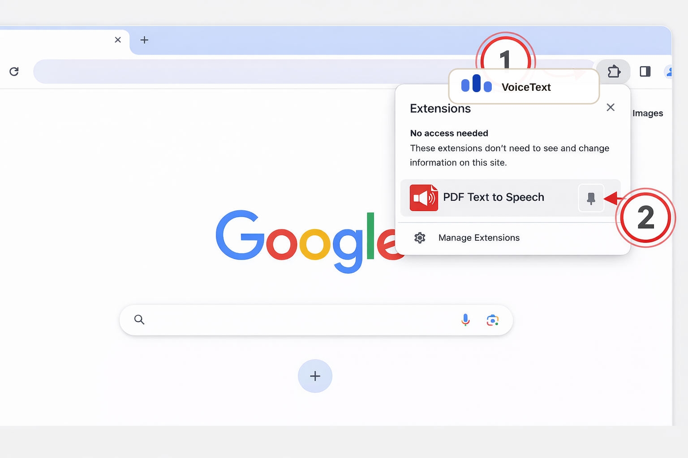
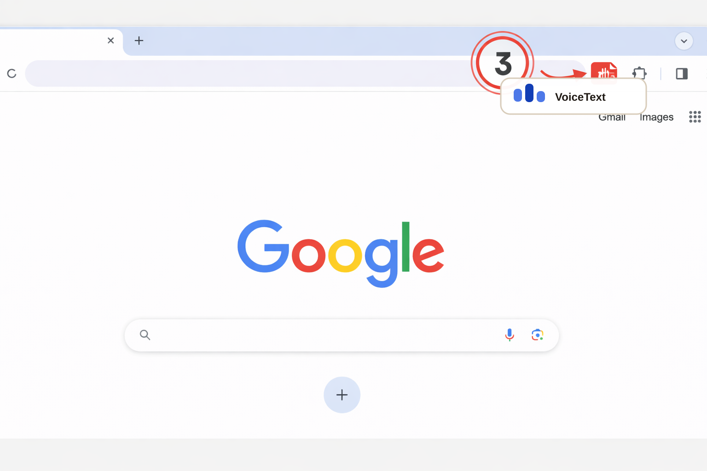

Speech to Text Google Docs
Pin the extension to keep voice typing one click away.
Click the extensions icon marked as 1, find Speech to Text Google Docs, and pin it with the icon marked as 2.

Open any Google Docs document, place your cursor, and start dictating from the toolbar.
Once pinned, open Google Docs, click where text should appear, and launch dictation from the button marked as 3.

Privacy notice: this extension sends account, usage, and billing requests to its backend to manage trial limits, checkout, and subscription status.